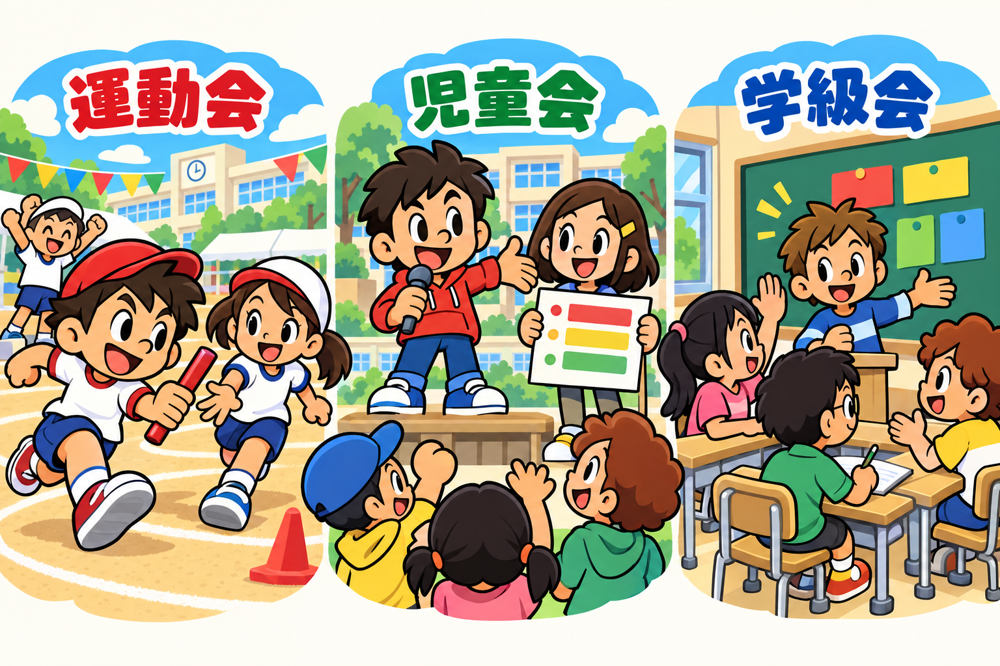

TOKKATSU広場 / ILLUSTRATION STUDY
最新：人型マスコットのHP・UI試作を見る →
最新：人型マスコットの4人を見る →
新しい広場の全景と4人を見る →
活動が伝わる。表情が見える。
「マリオのような親しみやすさ」を軸に、ゲームらしい2D・3Dを追加しました。大きな顔、はっきりした形、元気なポーズで活動を伝える比較見本です。
画像を押すと原寸で開きます。表示幅はウィンドウ幅を上限とします。

D · ゲーム風2D
太い輪郭・単純な顔・弾むポーズ。今回のイメージに最も近いと考える案です。
運動会：競技の瞬間
赤白帽・体操服・トラック。バトンの受け渡しと曲げた手足で、走っていることを伝えます。
児童会：子どもが進行
マイク・進行表・集会の舞台。子どもが呼びかけ、参加する子が応える関係を描きました。
学級会：意見を交わす
司会・挙手・記録・黒板のカード。机を囲む距離感と視線で、話合いの場面を伝えます。
広場に使うなら、顔が見える大きさで
絵を精細にしても、広い校庭の中に小さく置くと顔は見えなくなります。活動ごとに近景を設けて人物を大きく見せる構成が合います。
D・Eはゲームのキャラクターらしさを試した案です。最終素材では、顔・髪形・体格の異なる基本キャラクターを決め、同じキャラクターが各活動に登場する形にそろえると、親しみが積み重なります。
元の広場と比べる